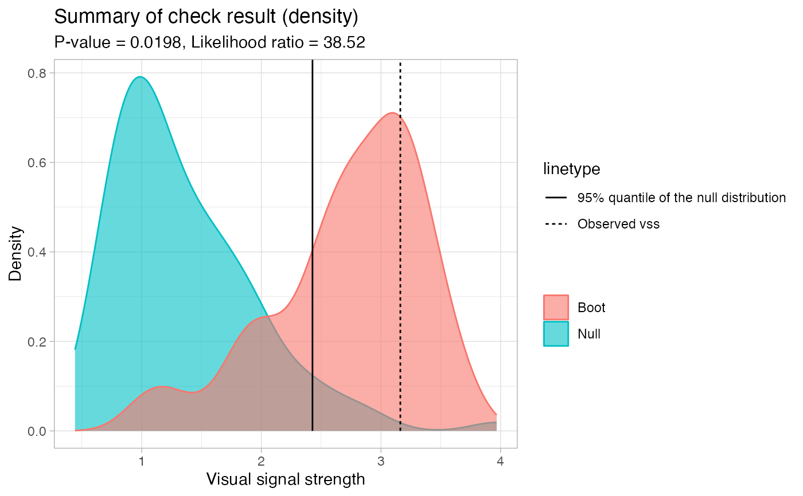

Draw a summary density plot for the result
Source:R/zzz_auto_visual_inference.R
AUTO_VI-cash-summary_density_plot.RdThis function draws a summary density plot for the result.
Arguments
- vss
Numeric. Observed visual signal strength.
- null_dist
Numeric. Null visual signal strength.
- boot_dist
Numeric. Bootstrapped visual signal strength.
- p_value
Numeric. P-value of the visual test. See also
AUTO_VI$p_value().- likelihood_ratio
Numeric. Likelihood ratio of the visual test. See also
AUTO_VI$likelihood_ratio().- density_alpha
Numeric. Alpha value for the density.
Examples
keras_model <- try(get_keras_model("vss_phn_32"))
if (!inherits(keras_model, "try-error")) {
myvi <- auto_vi(lm(dist ~ speed, data = cars), keras_model)
myvi$check()
myvi$summary_density_plot()
}
#> ✔ Generate null data.
#> ✔ Generate null plots.
#> Computing auxiliary inputs ■■■■■■■■■■■ 35% | ETA: 2s
#> Computing auxiliary inputs ■■■■■■■■■■■■■■■■■■■■■ 68% | ETA: 1s
#> Computing auxiliary inputs ■■■■■■■■■■■■■■■■■■■■■■■■■■■■■■■ 100% | ETA: 0s
#> ✔ Compute auxilary inputs.
#> Saving images ■■■■■■■■■■■■■■■■■■■ 59% | ETA: 1s
#> Saving images ■■■■■■■■■■■■■■■■■■■■■■■■■■■■■■■ 100% | ETA: 0s
#> ✔ Predict visual signal strength for 100 images.
#> ✔ Generate bootstrapped data.
#> ✔ Generate bootstrapped plots.
#> Warning: no non-missing arguments to min; returning Inf
#> Warning: Problem in area computation (Returns NA)
#> Computing auxiliary inputs ■■■■■■■■■■■■■■■ 45% | ETA: 1s
#> Computing auxiliary inputs ■■■■■■■■■■■■■■■■■■■■■■■■■■■■■■■ 100% | ETA: 0s
#> ✔ Compute auxilary inputs.
#> Saving images ■■■■■■■■■■■■■ 39% | ETA: 2s
#> Saving images ■■■■■■■■■■■■■■■■■■■■■■■■■■■■■■■ 100% | ETA: 0s
#> ✔ Predict visual signal strength for 100 images.
#> ✔ Predict visual signal strength for 1 image.
